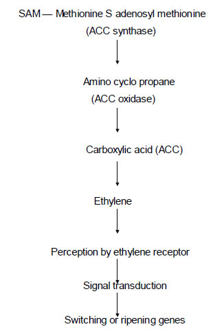

HORT 381 :: Lecture 03 :: MATURITY AND RIPENING PROCESS

MATURITY AND RIPENING PROCESS - MATURITY
It is the stage of fully development of tissue of fruit and vegetables only after which it will ripen normally. During the process of maturation the fruit receives a regular supply of food material from the plant. When mature, the abscission or corky layer which forms at the stern end stops this inflow. Afterwards, the fruit depend on its own reserves, carbohydrates are dehydrated and sugars accumulate until the sugar acid ratio form. In addition to this, typical flavour and characteristic colour also develop. it has been determined that the stage of maturity at the time of picking influence the storage life and quality of fruit, when picked immature like mango develop white patches or air pockets during ripening and lacking in normal brix acid ratio or sugar acid ratio, taste and flavour on the other hand if the fruits are harvested over mature or full ripe they are easy susceptible to microbial and physiological spoilage and their storage life is considerably reduce. Such fruits persist numerous problems during handling, storage and transportation. Therefore, it is necessary or essential to pick up the fruits or vegetables at correct stage of maturity to facilitate proper ripening, distant transportation and maximum storage life.
FRUIT RIPENING
Fruit ripening is a genetically programmed stage of development overlapping with senescence. The fruit is said to be ripe when it attains its full flavour and aroma and other characteristics of the best fruit of that particular cultivar. The words “mature “and “ripe” are essentially synonymous when used to describe these fruits that ripe on the plants known as non-climacteric. However, in case of climacteric fruits a mature fruit require period before attaining a desirable stage of edibility.
Table 1. List of climacteric and non-climacteric fruits
Climacteric |
Non-climacteric |
Apple |
Carambola |
Changes during Fruit Ripening
1. Cell Wall Changes
Cell wall consists of pectic substances and cellulose as the main components alongwith sma1amounts of hemicellulose and non-cellulosic polysaccharides. In cell wall, the changes particularly in the middle lamella which is rich in pectic polysaccharides are degraded and solubilised during ripening. During this softening, there is a loss of neutral sugars (galactose and arabinose-major components of neutral protein) and acidic pectin (rhamnogalacturonan) of all cell wall. The major enzymes implicated in the softening of fruits are pectine1asterase, polygalacturonase cellulase and b- galactosidase.
2. Starch
During fruit ripening sugar levels within fruit tend to increase due to either increased sugar importation from the plant or to the mobilization of starch reserves within the fruit, depending on the fruit type and whether it is ripened on or off the plant. With the advancement of maturity, the accumulated starch is hydrolysed into sugars (glucose, fructose or sugars) which are known as a characteristic event for fruit ripening. Further breakdown of sucrose into glucose and fructose is probably mediated by the action of invertase. In vegetables like potato and peas on the other hand, the higher sucrose content which remains high at fresh immature stage, converts into starch with the approach of maturity.
3. Organic Acids
With the onset of fruit ripening there is downward trend in the levels of organic acids. The decline in the content of organic acids during fruit ripening might be the result of an increase in membrane permeability which allows acids to be stored in the respiring cells, formation of salts of malic acid, reduction in the amounts of acid translocated from the leaves, reduced ability of fruits to synthesize organic acids with fruit maturity, translocation into sugars and dilution effect due to the increase in the volume of fruit.
4. Colour
With the approach of maturation, the most obvious change which take place is the degradation of chlorophyll and is accompanied by the synthesis of other pigments usually either anthocyanins or carotenoids. They can give rise to a wide range of colours (from red to blue). The chloroplasts in green immature fruit generally lose chlorophyll on ripening and change into chromoplasts which contain carotenoid pigments. Carotenoids are normally synthesized in green plant tissue a major product being 3-carotene. However, in many fruits additional - carotene and lycopene is synthesized during ripening.
5. Flavouring Compounds
Although fruit flavour depends on the complex interaction of sugars, organic acids, phenolics and volatile compounds but the characteristic flavour of an individual fruit or vegetable is derived from the production of specific flavouring volatile. These compounds are mainly esters, alcohols, aldehydes, acids and ketones. At least 230 and 330 different compounds in apple and orange fruits have been indicated respectively.
6. Ascorbic Acid
L-ascorbic acid (Vitamin C) is the naturally occurring ascorbic acid in fruits. A reduced amount of ascorbic acid is noticed in pome, stone and berry fruits at the time of harvest. An increase in ascorbic acid content with the increase in fruit growth has been and the levels declined with the advancement of maturity and onset of fruit ripening in pear, sweet potatoes, potato, asparagus and okra during the course of post harvest handling.
7. Phenolics
The phenolic content of most fruits declines from high levels during early growth to low levels when the fruit is considered to be physiologically mature and thereafter susceptible to the induction of ripening.
8. Amino Acids and Proteins
Decrease in free amino acid which often reflects an increase in protein synthesis. During senescence the level of free amino acids increases reflecting a breakdown enzymes and decreased metabolic activity.
9. Ethylene Production and Respiration
Physiological events responsible to ripening process are as follows
(1) Ethylene production
(2) Rise in respiration
Ethylene production
In climacteric fruits such as mango, banana, ethylene production increase and causes:
• Rise in respiration
• Rise in temperature
• Rise in activity of hydrolytic enzymes.
Ethylene is produced from an essential amino acid — methionine. Following the steps as below:

Rise in respiration
Respiration is required for releasing energy and the substrate for synthesis of several organic compounds required in the ripening process. During ripening in climacteric fruits, there is rise in respiration called climacteric. The clirnacteric peak is obtained very fast when temperature is relatively high. Respiration is a most deteriorating process of the harvested fruits and vegetables which leads to the oxidative breakdown of the complex materials (carbohydrates or acids) of cell into simpler molecules (CO2 and water) with the concurrent production of energy required by the cell for the completion of chemical reactions. In brief, the process of respiration can be summed up with the following reaction:
USE OF CHEMICALS FOR INCREASING SHELF LIFE OF FRUITS AND VEGETABLE
(A) Ethylene absorbent
Ethylene is responsible for decreasing shelf life. Putting KMNO4 @ 100 ppm soaked filter paper can minimized ripening and increase shelf life. In Banana this method is very useful.
(B) Antifungal Agents
• SOPP: Sodium orthophenylphenate
• Diphenyl wraps protection against moulds, stem-end rot.
• Dibromoletrachloroethane and esters give better flavour.
(C) Use of Inhibitors
Treatment |
Crop |
Chemical |
Concentration |
Post-harvest |
Mango |
MH |
1000-2000 ppm |
(D) Use of Auxins
Also helpful to advance in ripening and may increase shelf life.
Chemical |
Concentration |
Crop |
Stage |
2,4-D |
5 ppm |
Grape |
Pre-harvest |
E) Vegetables can be preserved by lactic acid and may increase the shelf life.
F) Post harvest dipping of papaya fruits either in l00 ppm GA3 or CaCl2 al 2% extended shelf life up to 9 days without any decline in quality.
| Download this lecture as PDF here |